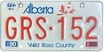
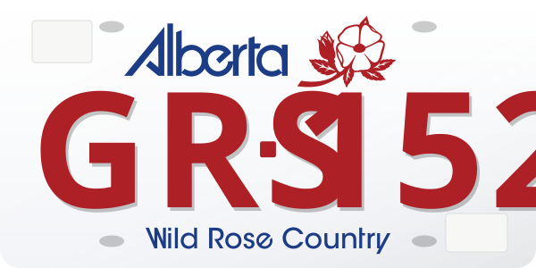
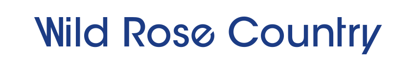
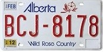
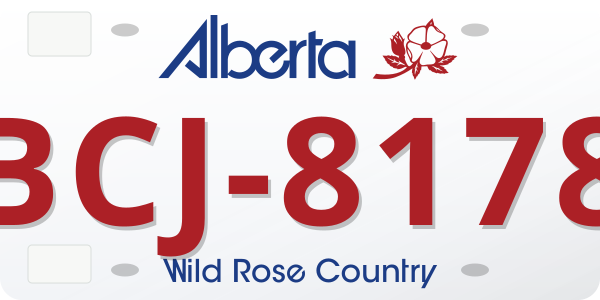
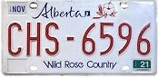
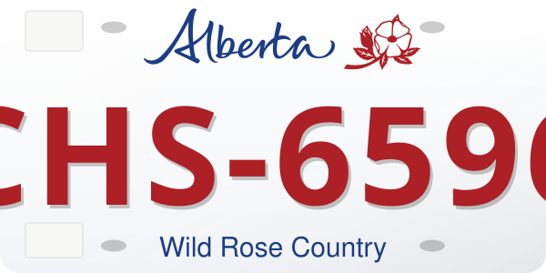
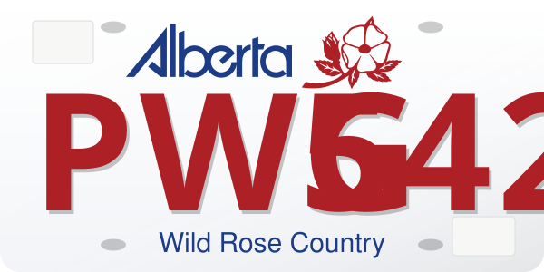
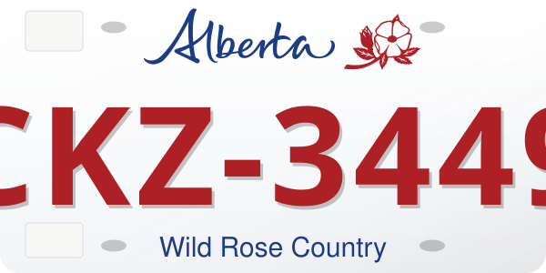

GRS-152 · 1984 Series


The supplied geometric and script Alberta paths replace font stand-ins. The native rose/stem/leaves vector replaces the generic flower. Both wordmarks are blue and the rose uses the serial red; graphics scale uniformly.
The script Government subline and teal block are excluded. The two EPS uploads are identical; their geometric wordmark agrees with the supplied SVG selection. The editable serial remains independent approximate lettering.
The actual upload is ITC Avant Garde Gothic Std Medium, PostScript name ITCAvantGardeStd-Md, OTF 1.018. Its OpenType tables do not include the requested W/e/t/y alternates. The first line uses only the supplied default outlines. The second retains the other supplied outlines and reconstructs those four forms against the original Avant Garde alternate specimen and Alberta photographs.

Both lines share the same cap height and retain their relative widths. On the plates the complete line is uniformly fitted to a 275-unit width limit, at about 23.2 units of nominal cap height on the 600 × 300 plate plane. No letter is individually squeezed to hide a width mismatch. Medium is a visual weight candidate; a Book/Pro font was not supplied for comparison. These reconstructions are not authentic Pro alternate outlines or recovered historical printing masters. The gallery photographs below are too small to certify exact stroke thickness.
The fixed lettering is exported as paths, so it does not depend on an installed font. This applies to all three Wild Rose Country presets. The Moraine Lake “Strong and Free” motto uses its own lettering. Font hash, glyph choices and fitting record · Font research and rebuild notes
Source labels below distinguish the 1984 series, seven-character 2010 series, and photographed 2019 script revision. These labels do not certify exact tooling dates or the last use of older plates. The previous generic 1983 wording was corrected to the gallery’s 1984-series caption. Blank wells do not assign a photographed renewal year to every plate.






These use the layouts fitted to the PWG-542 and CKZ-3449 references you supplied.


Photographic crops are credited to World License Plates · Alberta; rights remain with their creators. Source hashes and selected components · Research notes and rebuild steps